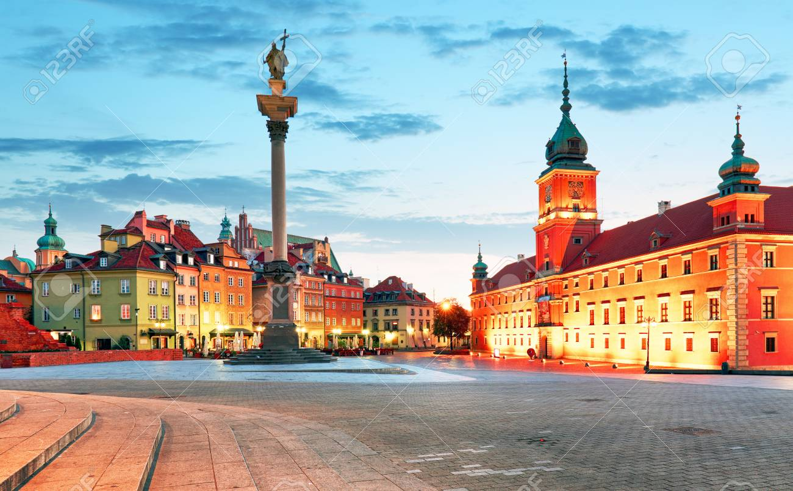

WARSAW

Aside from being Poland's capital city, Warsaw is home to alot of history of the country (probably the reason why it is the capital). All the vlogs that I watched regarding these places, especially Warsaw, made me feel like I've been there before, which kind of ironically makes me more interested to moving there (yes, not just visiting, after some seven years or so).
Shown in the left is the Old Town in Warsaw. This looks like a modern style painting but this is just Warsaw at night, and is another reason why it is in the top of my list. The aesthetics of the place cannot be ignored.